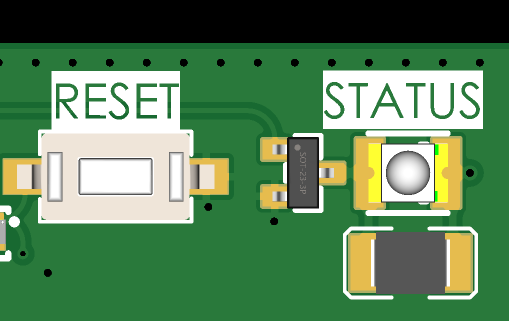

5. Funcionamiento del Datalogger
El ISURLOG es un datalogger inteligente diseñado para funcionar de forma autónoma durante largos periodos en modo de ultra bajo consumo. Su funcionamiento se articula en torno al Ciclo de Registro Normal y a un Modo de Diagnóstico por Bluetooth manual.
5.1. Modo de Diagnóstico por Bluetooth (Activado por Imán)
Este modo permite al personal de campo interactuar directamente con el ISURLOG mediante una conexión local.
Dos modos activados por imán
Mantener el imán cerca del sensor también activa un segundo modo, más breve — Lectura y Envío Inmediato (~1 segundo) — que fuerza un ciclo de lectura y transmisión bajo demanda sin entrar en el modo Bluetooth. Ver 1.8 Sensores Internos y Diagnóstico para ambos modos, uno junto al otro. Este apartado cubre el mantenimiento más largo (más de 5 segundos) que activa el Modo de Diagnóstico por Bluetooth.
1. Activación
Al mantener un imán sobre la zona del sensor magnético durante más de 5 segundos (ver 1. Conexión de Sensores para la ubicación exacta), el ISURLOG se despierta de inmediato y entra en este modo especial. El LED STATUS comenzará a parpadear con un patrón distintivo para indicar que está listo (ver 5.3. Diagnóstico en Campo (LED STATUS)).
2. Espera de Conexión
El datalogger activa su Bluetooth y entra en modo de emparejamiento, a la espera de que un teléfono móvil o tablet se conecte a través de la aplicación o la interfaz web de IsurDASH. El ISURLOG esperará como máximo 2 minutos (120 segundos) por una conexión. Si ningún cliente se conecta en ese tiempo, cancelará el modo Bluetooth y continuará con su ciclo de registro normal.
3. Sesión de Datos en Vivo
Una vez que un cliente se conecta, el datalogger entra en modo de "datos en vivo". En este estado, el dispositivo:
- Realiza lecturas continuas de todos los sensores activados.
- Envía estos datos en tiempo real al dispositivo conectado (teléfono o tablet) por Bluetooth, permitiendo ver los valores al instante.
- Durante este tiempo, el usuario también puede enviar nuevas configuraciones al datalogger desde la aplicación.
4. Finalización
La sesión de Bluetooth termina cuando el usuario se desconecta de la aplicación. En ese momento, el ISURLOG sale del modo Bluetooth y retoma su ciclo de registro normal programado.
5.2. Ciclo de Registro Normal (Funcionamiento Automático)
Este es el modo de funcionamiento estándar y autónomo del ISURLOG.
1. Despertar y Leer
El ISURLOG se despierta automáticamente en el momento programado. La primera tarea es realizar un ciclo completo de lectura de sensores, encendiendo únicamente los componentes necesarios para leer todos los sensores activados en la configuración. También mide su propia tensión de batería.
2. Comprobación de Alarmas
Inmediatamente después de la lectura, el dispositivo comprueba si alguno de los valores medidos ha superado los umbrales de alarma configurados por el usuario.
3. Empaquetado y Almacenamiento
Todos los datos recogidos en el ciclo se empaquetan en un formato compacto y se almacenan de forma segura en la memoria RAM del dispositivo. El ISURLOG lleva un recuento de cuántos registros se han acumulado.
4. Decisión: ¿Transmitir o Dormir?
Tras almacenar los datos, el ISURLOG decide si activar el módem para transmitir los datos a la nube, o si debe volver a dormir para seguir acumulando registros. Esta decisión depende directamente del "Modo de registro" seleccionado en la configuración:
- Modo Fijo (Normal): el dispositivo prioriza el ahorro de energía y la agrupación de datos. La transmisión ocurre únicamente cuando se alcanza el número de registros definido en el "Acumulador de registros". Las condiciones de alarma quedan registradas en los datos, pero no fuerzan un envío inmediato.
- Modo Condicional: el dispositivo prioriza la notificación de eventos importantes. La transmisión ocurre si se cumple cualquiera de las siguientes condiciones:
- Se ha alcanzado el número de registros definido en el "Acumulador de registros".
- Se ha detectado una condición de alarma durante el ciclo de lectura.
En este modo, una alarma crítica siempre forzará una conexión y un envío de datos inmediato, aunque el acumulador no esté completo.
5. Vuelta al Reposo Profundo
Tras completar su tarea (ya sea solo almacenar, o almacenar y transmitir), el ISURLOG apaga todos los componentes no esenciales y entra en un modo de reposo profundo de ultra bajo consumo. Permanecerá en este estado hasta que el temporizador interno indique que es hora de despertar para el siguiente ciclo, o hasta que se active manualmente mediante el imán.
5.3. Diagnóstico en Campo (LED STATUS)
El ISURLOG incorpora un LED verde de ultra bajo consumo, identificado en la PCB como "STATUS", que sirve como indicador visual para comunicar el estado y la actividad actual del dispositivo.
Este indicador se encuentra en la esquina superior derecha de la PCB, justo al lado del botón RESET.
En los modelos de ISURLOG con tapa transparente, el LED es visible desde el exterior; sin embargo, en las versiones con tapa opaca, es necesario abrir la tapa para observarlo. Debido a su diseño de ultra bajo consumo para maximizar la duración de la batería, la intensidad del LED es moderada, lo que puede dificultar su visualización bajo luz solar directa.

El LED STATUS, junto al botón RESET.
Patrones del LED y su Significado
Observar el patrón de STATUS es la forma más rápida de diagnosticar el comportamiento del datalogger en campo sin necesidad de establecer una conexión.
| Estado del ISURLOG | Patrón del LED STATUS |
|---|---|
| Modo de bajo consumo (batería OK) | Un destello corto cada 10 segundos. |
| Modo de bajo consumo (batería < 3600mV) | Un destello corto y espaciado cada 20 segundos. |
| Despertando / Leyendo sensores | Un destello corto y frecuente cada 2 segundos. |
| Inicializando conexión (NB-IoT/LoRaWAN) | Una secuencia de tres destellos rápidos. |
| Transmitiendo datos (NB-IoT/LoRaWAN) | Un pulso de luz largo durante la transmisión. |
| Modo Bluetooth (esperando conexión) | Una secuencia de cinco destellos rápidos. |
| Modo Bluetooth (cliente conectado) | Una secuencia de tres destellos rápidos. |
Nota sobre el contador de pulsos
Cuando la entrada digital está configurada en modo "contador de pulsos", el indicador LED se desactiva automáticamente. Esto se debe a que ambas funciones (el contador de pulsos y el parpadeo del LED en modo de bajo consumo) usan el mismo recurso interno del microcontrolador, y su funcionamiento simultáneo es incompatible.